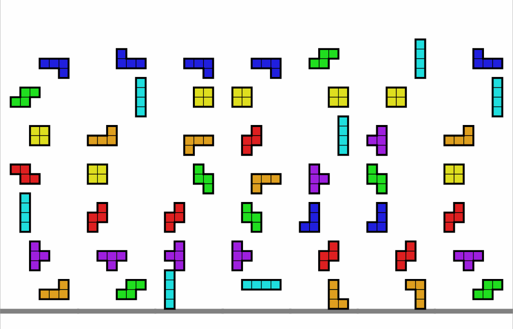

1. Why
This course stems from my dream of creating an opportunity for Spanish speakers interested in learning Korean from scratch. After two years of studying the language, I realized the lack of linguistic resources offering a practical methodology to approach learning this language and the necessary mindset to achieve it. This course emerges as a response to that need.

Differentiation in Methodological Approach:
In this course, I have adopted a unique approach that combines teaching Korean from its fundamentals with practical and effective learning strategies.
From the creation of Korean letters, inspired by the historical process of their invention, to understanding reading rules and syllable formation, each lesson is designed to offer a deep and meaningful learning experience. We explore Korean consonants and vowels not only as individual elements but as pieces of a linguistic puzzle that come together to form words and phrases.
By understanding the relationship between consonants and vowels, students not only acquire basic reading and writing skills but also develop a deeper understanding of the structure of the Korean language.
Furthermore, at the end of the course, we highlight the importance of syllables and reading rules, demonstrating how these follow logical and coherent patterns based on previously learned concepts. We provide students with practical tools to remember these rules and apply them in their daily reading and writing, allowing them to effectively and durably consolidate their understanding of the Korean language.
Moreover, at the culmination of the course, we underscore the significance of syllables and reading regulations, illustrating how these adhere to logical and coherent patterns rooted in previously acquired concepts. We equip students with practical methodologies to recall these regulations and implement them in their daily reading and writing endeavors, facilitating the solidification of their comprehension of the Korean language in an effective and enduring manner.